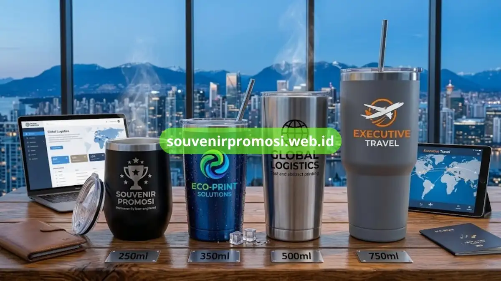

Poin Penting
- Tumbler menggunakan bahan stainless steel grade 304 yang aman (food grade) dan tahan karat.
- Konstruksi double wall vacuum menjaga suhu minuman panas atau dingin lebih lama dibanding single wall.
- Kapasitas tumbler bervariasi mulai dari 250 ml hingga 750 ml untuk menyesuaikan kebutuhan segmen yang berbeda.
- Teknik cetak logo dapat menggunakan laser engraving, UV printing, maupun sablon sesuai detail desain.
- Pilihan finishing seperti matte, glossy, atau metalik memberikan efek visual berbeda pada identitas korporat.
Daftar Isi
Pendahuluan
Tumbler custom stainless steel untuk souvenir promosi umumnya menggunakan bahan food grade dengan konstruksi double wall vacuum agar mampu menahan panas dan dingin lebih lama. Spesifikasi ini menjadi acuan utama sebelum perusahaan menentukan model tumbler yang akan dicetak logo. Artikel ini merinci bahan, kapasitas, dan teknik cetak yang tersedia di Souvenir Promosi.
Bahan Stainless Steel yang Digunakan pada Tumbler Custom
Tumbler custom untuk souvenir promosi umumnya menggunakan stainless steel grade 304 yang dikenal food grade, tahan karat, dan aman untuk kontak langsung dengan minuman. Bahan ini menjadi standar industri untuk produk tumbler premium karena daya tahannya terhadap korosi dan perubahan suhu.
Konstruksi double wall dengan ruang vakum di antara dua lapisan stainless steel memungkinkan tumbler menahan suhu panas maupun dingin lebih lama dibanding tumbler single wall. Lapisan luar tumbler juga dapat diberi finishing powder coating agar permukaan lebih halus dan siap dicetak logo.
Perusahaan yang ingin memesan tumbler dengan spesifikasi bahan tertentu dapat berkonsultasi langsung dengan tim Souvenir Promosi.
Kapasitas Tumbler Custom yang Tersedia untuk Souvenir Promosi
Souvenir Promosi menyediakan beberapa pilihan kapasitas tumbler custom, mulai dari 250 ml untuk kebutuhan pembagian massal, 350 ml hingga 500 ml untuk pemakaian harian, hingga 750 ml untuk segmen eksekutif atau pemakaian saat perjalanan dinas.
Pemilihan kapasitas berkaitan langsung dengan area cetak logo yang tersedia. Semakin besar kapasitas tumbler, semakin luas pula ruang yang dapat digunakan untuk mencetak logo, tagline, atau elemen visual korporat lainnya.
Ketebalan Dinding dan Daya Tahan Panas Tumbler Custom
Ketebalan dinding stainless steel pada tumbler custom memengaruhi seberapa lama tumbler mampu menjaga suhu minuman. Model dengan dinding lebih tebal dan konstruksi double wall vacuum umumnya menjaga suhu lebih lama dibanding model dengan dinding tipis atau single wall.
Souvenir Promosi menyediakan beberapa varian ketebalan sesuai kebutuhan anggaran dan tujuan pemakaian, sehingga perusahaan dapat memilih keseimbangan antara harga dan daya tahan panas yang diinginkan.

Teknik Cetak Logo yang Tersedia untuk Tumbler Custom
Ada beberapa teknik cetak yang umum digunakan pada tumbler custom stainless steel, di antaranya laser engraving, sablon, dan UV printing. Laser engraving menghasilkan tampilan logo yang terukir permanen pada permukaan logam dan cocok untuk desain satu warna.
UV printing lebih sesuai untuk logo dengan banyak warna atau gradasi karena mampu mencetak detail visual secara lebih presisi. Sablon manual masih digunakan untuk desain sederhana dengan anggaran produksi yang lebih terbatas.
Warna dan Finishing Permukaan Tumbler Custom
Finishing permukaan tumbler custom umumnya tersedia dalam pilihan glossy, matte, dan metalik. Setiap finishing memberikan efek visual berbeda terhadap hasil cetak logo, sehingga pemilihannya sebaiknya disesuaikan dengan identitas visual perusahaan.
Spesifikasi tumbler custom stainless steel, mulai dari bahan food grade, kapasitas, ketebalan dinding, hingga teknik cetak, menjadi dasar penting sebelum perusahaan menentukan souvenir promosi yang akan digunakan. Untuk mendapatkan rekomendasi spesifikasi yang sesuai kebutuhan branding perusahaan Anda, kunjungi https://souvenirpromosi.web.id/ dan konsultasikan langsung dengan tim Souvenir Promosi.